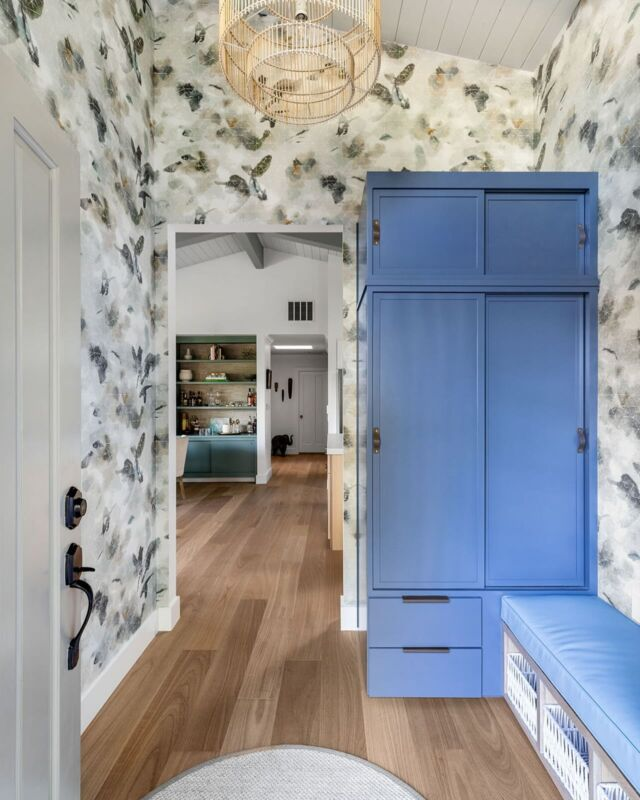

Client Testimonials
“It truly reflects our personalities.”
"Alexis successfully managed the interior design for a large scale renovation while we were living outside
the country. What we appreciated most was her unflappable demeanour, her ability to work well in a team
under pressure and her ability to listen/understand our vision. We absolutely love the results and our home
is not only beautiful but extremely functional. It truly reflects our personalities."
Elizabeth and James - San Francisco, CA
Elizabeth and James - San Francisco, CA
“Just the vision I had.”

"I want to tell you how much we appreciate all your attention to details. Airy with graceful lines & soft
colors: this is just the vision I had for the Beach House. It is so serene and lovely. Each item is lovely
on its own & they all harmonize so beautifully together. We love the soft grays, blues & white. The desk in
my bedroom is a true work of art. The sofa & pillows are gorgeous & comfy.
It has been such a wonderful experience to work with you creating this beautiful vacation dream home for us. Thank you so very, very much. We very much appreciate your beautiful design sense."
Catherine - San Francisco
It has been such a wonderful experience to work with you creating this beautiful vacation dream home for us. Thank you so very, very much. We very much appreciate your beautiful design sense."
Catherine - San Francisco
“A Wonderful Experience.”
"We had a wonderful experience working with Alexis to design a nursery for our son. Alexis was clear when
outlining the design process and we knew what to expect when working with her. All of our design meetings
were efficient and enjoyable. Alexis kept us updated on the status of ordering, shipping and delivery on all
items for the nursery. We had pleasant experiences with all of the service providers she engaged on our
project.
Alexis worked with our vision to create a "sophisticated safari" themed nursery. The nursery design Alexis created for the space is absolutely beautiful. The statement blue ceiling is adored by everyone who sees it! The wall decorations Alexis chose all hold our son's interest, which is a wonderful bonus. The nursery is our favorite room in our home! Thank you for your creativity and expertise, Alexis!"
Maris - Menlo Park, CA.
Alexis worked with our vision to create a "sophisticated safari" themed nursery. The nursery design Alexis created for the space is absolutely beautiful. The statement blue ceiling is adored by everyone who sees it! The wall decorations Alexis chose all hold our son's interest, which is a wonderful bonus. The nursery is our favorite room in our home! Thank you for your creativity and expertise, Alexis!"
Maris - Menlo Park, CA.
“A Pleasure to Work With”
"I have managed many buildings and encountered a variety of interior designers, vendors and contractors.
Alexis has always been a pleasure to work with. She complies with our rules & regulations, stays on
schedule, asks the right questions, and overall understands what it takes to make the residents happy. I
look forward to working with Alexis for many years to come."
Grace - San Francisco
Grace - San Francisco
“Long Distance Designer”
"Alexis completely transformed our dated NYC apartment into an elegant, cozy and most importantly,
kid-friendly, home for me and my family. We had begun an enormous gut renovation on our 3500 square foot
apartment which was overwhelming and thankfully Alexis stepped in and helped us through it. She worked with
me long distance and through rounds of emails, phone calls, and texts she quickly ascertained what I was
looking for and put together a cohesive design plan with all the colors, patterns, textures and fabrics I
loved. She was so thoughtful with every detail and selection which resulted in the apartment really feeling
like 'me' and not a cookie-cutter, generically decorated apartment. She has an amazing eye for fabrics and
color and she just made the whole process fun. We can't thank her enough for creating such a beautiful and
special home for us."
Vanessa - New York City
Vanessa - New York City
“A Talented Interior Designer.”
"Alexis is first and foremost a lovely, intelligent person. She is someone you can feel confident
representing you and handling your projects, with minimal input from you other than initially.
She has excellent taste; designs and keeps schedules; is respected by vendors and contractors and others, such as homeowners associations and managers with whom she must work to complete a job. This means everything runs smoothly and on time.
You would be fortunate to have Alexis agree to take responsibility for your work."
Ann - San Francisco
She has excellent taste; designs and keeps schedules; is respected by vendors and contractors and others, such as homeowners associations and managers with whom she must work to complete a job. This means everything runs smoothly and on time.
You would be fortunate to have Alexis agree to take responsibility for your work."
Ann - San Francisco
“So lovely.”
"We just wanted to let you know how happy we are with how the nursery has turned out. It has a very peaceful
vibe that makes us want to spend time there. Our baby nurse also 'inspected' it fully today and she's very
happy too! She *loves* the glider/recliner :-)
Thank you for all the hard work and iterations you've done on this. Now it just needs a baby to be complete!"
Kaitlyn - San Francisco
Thank you for all the hard work and iterations you've done on this. Now it just needs a baby to be complete!"
Kaitlyn - San Francisco